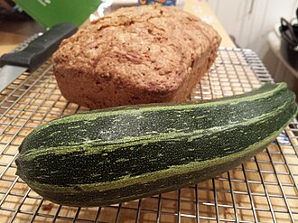

This is a recipe for Zucchini Bread, my mom makes it sometimes, I think it's pretty good
"This is the recipe that my childhood friends ask me for"
-My Mom

Temaciejewski, CC BY-SA 3.0 https://creativecommons.org/licenses/by-sa/3.0, via Wikimedia Commons
Tips
- Squeeze as much moisture out of zuchinni as possible
This makes 2 loaves of bread
Ingredients
| Ingredient | Amount |
|---|---|
| Eggs | 3 |
| Flour | 2 c. |
| Sugar | 2 c. |
| Oil | 3/4 c. |
| Salt | 1 tsp |
| Grated Zuchinni | 2 c. |
| Baking powder | 1/2 tsp |
| Baking soda | 2 tsp |
| Cinnamon | 2 tsp |
Instructions
- Preheat oven to 350
- Combine all dry ingredients and whisk together
- In a seperate bowl beat the eggs and mix the oil and zuchinni
- Mix the wet and dry ingredients and put them into the two pans
- Bake for 50 minutes